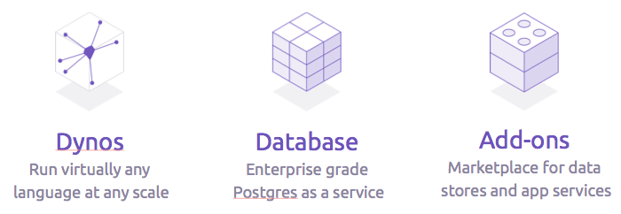
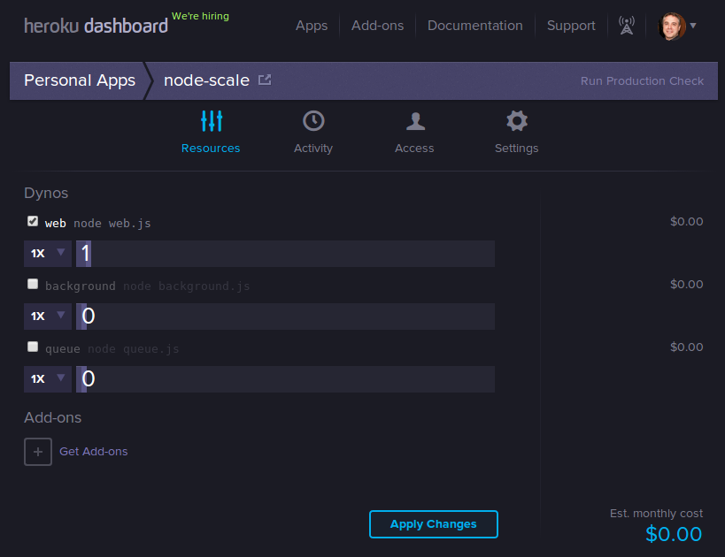
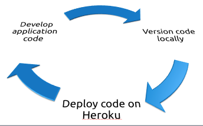
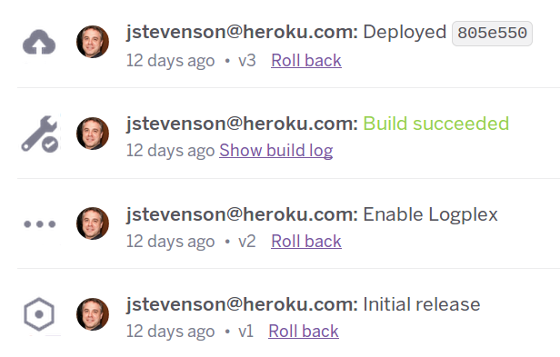
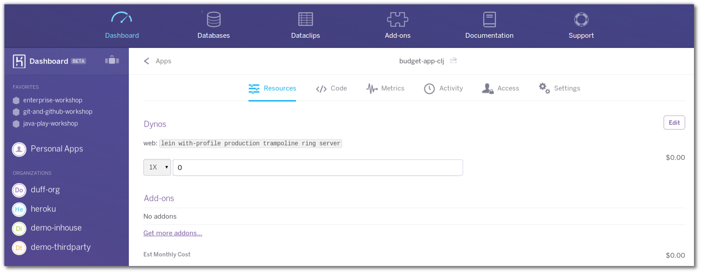
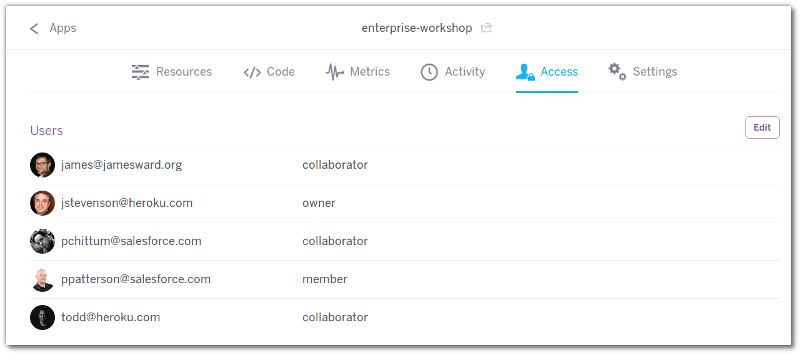
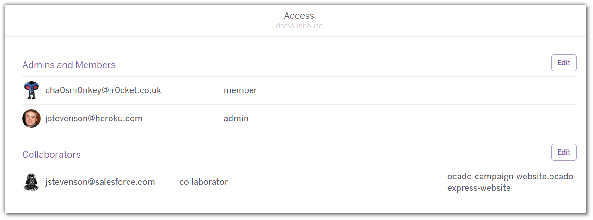
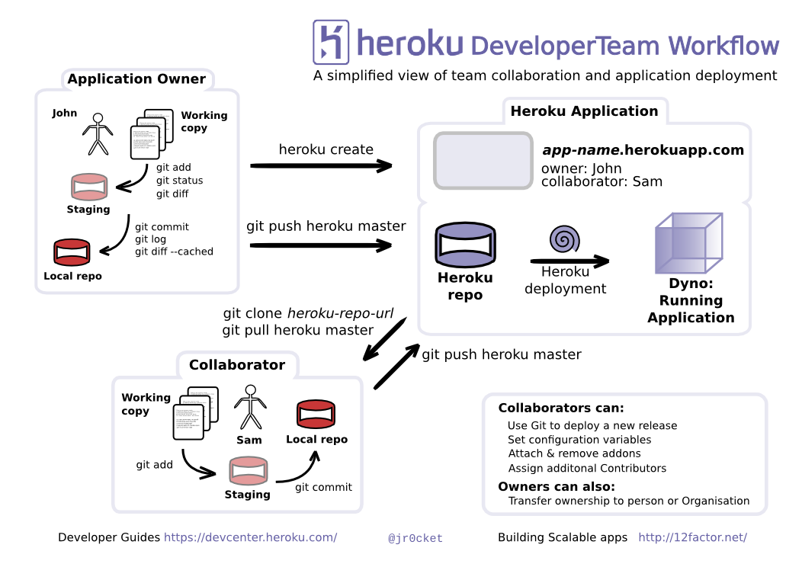
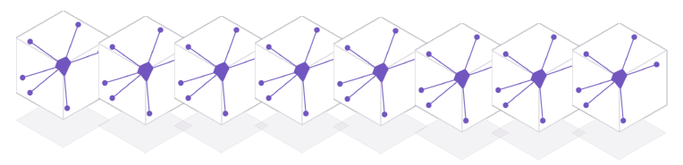
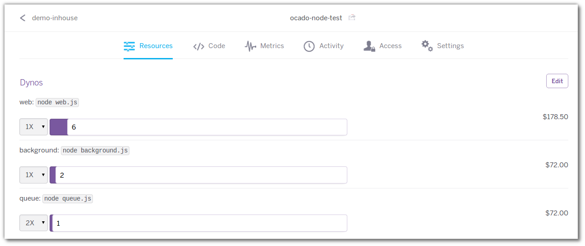

Heroku Overview for Developers
John Stevenson
jr0cket
Lets start with a demo
- Heroku Button - Node.js heroku sample app
- Heroku Button - Clojure Budget app with Luminus
- Heroku Button - Ruby Rails app
- Ruby app and Postgres Database
- Node.js simple site (command line)
Overview of Heroku
Platform as a Service (PaaS)
{kind=link}
Highly scalable deployment platform
- developers can focus on their apps
- add-on services to help build your apps
- DevOps team as a service
Developer focused
Use Git to securely transfer code to Heroku
git push heroku master
{kind=link}
{kind=link}
Flexible Language support
Ruby, Node.js, Python & Java
- community buildpacks for everything else
- fork / create your own buildpacks
Scalable platform
Scale your apps "instantly"
{kind=link}
Continuous Deployment
Who uses Heroku
Startups who need to find the right idea
- LevelUp Huricane proof payments
Enterprises that need to innovate
- Toyota France
- 02 Match Day : O2 Labs
Getting Started
Create a free account
Install Heroku Toolbelt
toolbelt.heroku.com
Securely identify yourself with Heroku
heroku login
Developing your first app on Heroku
Start developing your app
- using what ever language you like
Version your app with Git
git init git add . git commit -m "meaningful message"
{kind=link}
Create an app on Heroku
Connects your local Git repository to Heroku Creates a unique URL for your app
heroku create heroku create unique-name heroku create --region eu|us
{kind=link}
Deploy your app
Push your committed code to Heroku securely
git push heroku master
Continuous Deployment
{kind=link}
Tracable Deployment
Git version numbers used to label each Heroku deployment
- trace which version is deployed using Git log
{kind=link}
Dashboard Activity trail
Audit trail of activity for your app deployment
{kind=link}
Heroku Dashboard in detail
{kind=link}
Collaborating with Heroku
Allow other developers to deploy new versions
{kind=link}
Collaborating with Heroku Orgs
Support collaboration across a company and its partners
Developer worlflow with Heroku
{kind=link}
Developer worlflow with Github and Heroku

Running and Scaling your app
{kind=link}
Defining Processes
Procfile defines all the different processes in your app
Web & other process types
web: listens on http/https
worker: one off process jobs
call processes other than web anything you like
Scaling a process
Scale a process up or down, instantly
heroku ps:scale web=4 heroku ps:scale worker=2
Example Node app with multiple process
{kind=link}
Auto Scaling
Services available in the Heroku addons marketplace
- analyse the performance of your code first though
Guiding Principles
Managing Apps
Consistent Environments
Dev, Test, QA, Staging, Production all from same codebase
- automated creation of environments
- automated deployment
- minimises errors
- repeatable process
Environment Variables
Manage differences in environments easily Avoid hard coding configuration
heroku config
Heroku Logs
Heroku logplex: all your logs in one stream
heroku logs --tail heroku logs --source app | ps | heroku
Longer term Logging
- Logly
- Papertrail
Releases
Every Git Push is a Release Every Environment Variable change is a Release Every Addon service is a Release
heroku releases heroku releases:info v42
Rollbacks
Instantly roll back to a previous version
heroku releases:rollback heroku releases:rollback v42
Accessing the server, safely
Spin up a copy of your app and access via secure shell
heroku run bash heroku run bundle ...
{kind=link}
Performance metrics
Heroku Metrics New Relic
Working with Addon services
Datastores and services to support your apps
Postgres
Database on demand